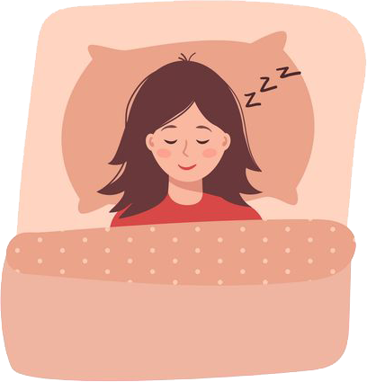

Контактні дані розробника
Сайт розроблено з метою визначення вашого сонного способу життя. Весь матеріал оброблено та скомпільовано студентом Луцького НТУ для ознайомлення. При виникненні будь-яких запитань, очікуємо абсолютно кожного електронного листа на пошту denysiukandrew@gmail.com і будемо раді почути від Вас ваші відгуки :).